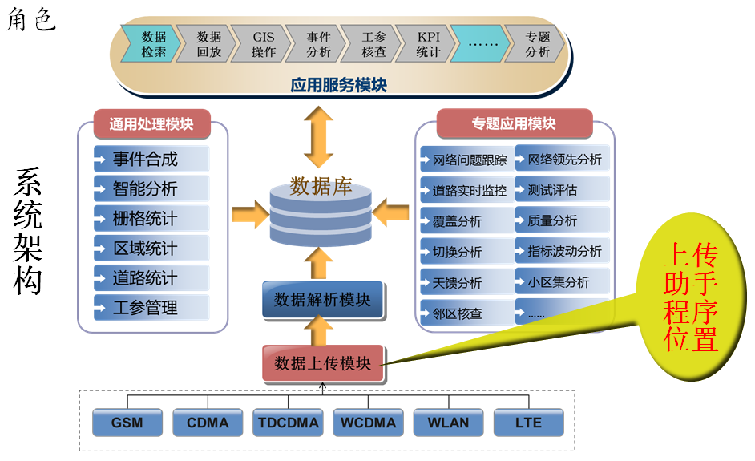
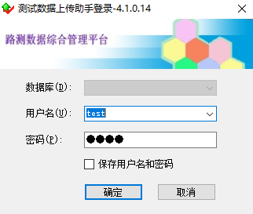
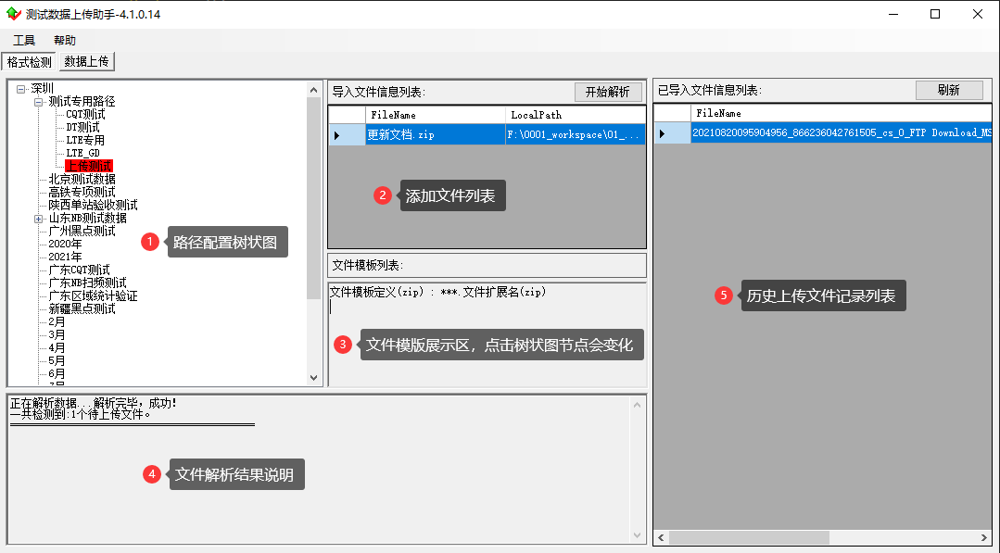
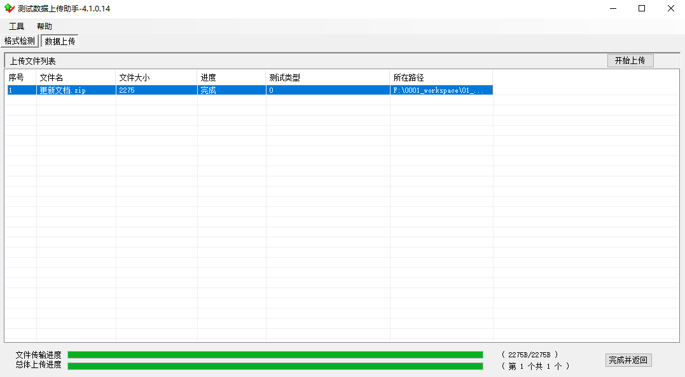
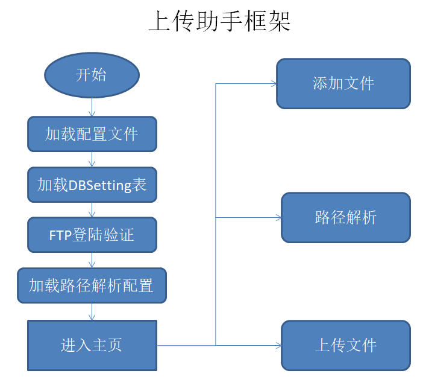

一、程序的简介
-
上传助手程序的背景：
随着通信测试业务的发展，市面上涌现出了许多的测试设备，每种测试设备生成的文件后缀千奇百怪，各个厂家命名的文件名形形色色， 如果不加以控制上传的文件，那么路网通平台将会堆满许多“垃圾文件”。其次，对于文件项目类型，测试类型，地域值等需要借助路径解码算法获取， 因此需要通过文件名来识别一些字段信息，并且需要将文件放入正确的目录下才能准确解码。
因此开发了上传助手，对上传的文件进行监控、分配和限制。
-
图标和名称
UploadAssistant.exe
此外还有一些关于中低端优化服务项目的功能。
-
角色与位置

二、程序说明
-
登陆界面
 界面说明：
如左图为上传助手登陆界面。
1.数据库下拉框灰显，不能进行选择。
2.数据库在配置文件中设置。
3.用户名为ftp用户名。ftp用户名需要从数据库拿到的用户名列表中进行选择。不能自行输入。
4.密码为对应ftp用户名的密码，需要自行输入。
5.保存用户名和密码就是字面意思。
6.点击确定后，如果密码和数据库中的一样，才能登陆。 -
程序主界面
主界面有格式检测和数据上传两部分构成
<1>格式检测界面
 界面说明：
1.点击树状节点，然后使用右键功能进行文件导入。导入的文件经过路径解析和上传功能后就会上传到这个节点目录下。
2.添加后的文件会显示在这里，可以右键取消导入的文件。
3.在节点目录上配置的属性信息会显示在这里，随着选中的节点变化而变化。
4.日志窗口，显示文件解析结果信息。
5.呈现历史导入文件的信令。使用右键功能可以导出到Excel文件中。
6.导入文件后，点击“开始解析”按钮，即可执行文件路径解析。结果提示会显示在日志输出框中。<2>数据上传界面
 界面说明：
在格式检测界面中所有通过检测的文件都会显示在这个文件列表中。点击开始上传后，文件会通过ftp协议传输到 对应的路径解析配置的节点目录下。底部显示传输字节情况和传输文件个数情况。传输完毕后，点击完成并返回按钮，返回。
三、工作原理
-
程序原理图

由上图可以看出，程序初始化阶段会加载配置文件，然后加载DBSetting数据库配置表，接着弹出FTP登陆界面，校验FTP账户密码，最后加载路径解析数据库配置。成功后进入主界面。 用户可以导入文件，对文件进行检测，上传等操作。
四、配置文件说明
-
配置文件名称：UploadAssistant.exe.config
-
配置字段说明
字段名 说明 ftpIP 上传使用的远程FTP服务器 sqlIP 数据库主库服务器 dataTable 访问的数据库名 RootDir 远程FTP目录 ftpPort 远程FTP端口 sqlPort 数据库访问端口 logConfig_MonthSpan 呈现历史上传数据时间限制 OnlyMasterSetting 是否为单一主库 PswMainDB 数据库密码 IP4OA 是否为OA系统 serverip_OA OA系统IP dbport_OA OA系统访问端口 IsSandbox 是否为沙盒测试 FTP协议 FTP协议类型(ftp 、sftp) -
其它功能项比较抽象，请培训讲师现场操作演示！